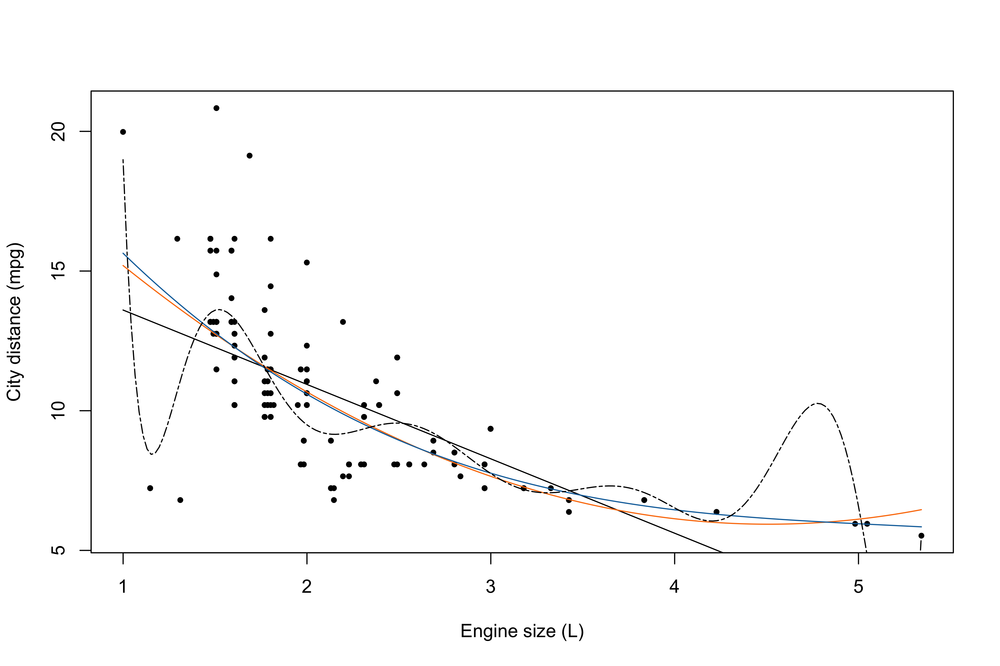
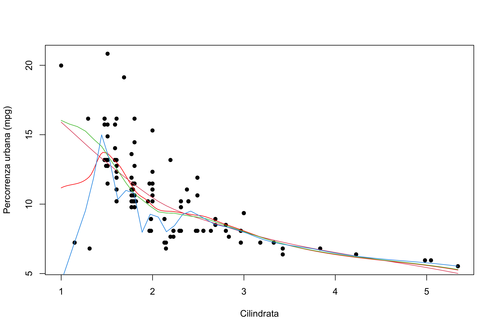
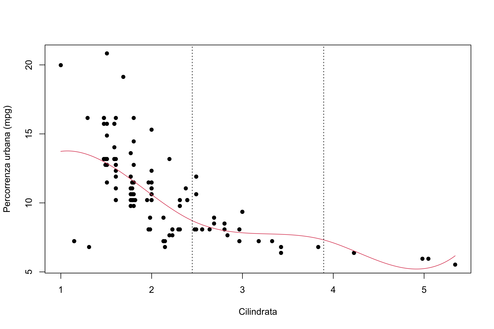

rm(list =ls()) # Clean the environment# The dataset can be downloaded here: https://tommasorigon.github.io/datamining/data/auto.txtauto <-read.table("../data/auto.txt", header =TRUE)auto <-subset(auto, select =c(city.distance, engine.size))# Summarystr(auto)
'data.frame': 203 obs. of 2 variables:
$ city.distance: num 8.93 8.93 8.08 10.2 7.65 ...
$ engine.size : num 2.13 2.13 2.49 1.79 2.23 ...
Polynomial regression
y <- auto$city.distance # As the name suggest: city distancex <- auto$engine.size # And engine size (L)plot(x, y, xlab ="Engine size (L)", ylab ="City distance (mpg)", pch =16, cex =0.7)# Set of points at which the curve is evaluatednewx <-data.frame(x =seq(min(x), max(x), length =200))# p = 1 (linear regression)lines(newx$x, predict(lm(y ~ x), newdata = newx), lty =1, col ="black")# p = 2 (parabolic regression)lines(newx$x, predict(lm(y ~ x +I(x^2)), newdata = newx), lty =1, col ="#fc7d0b")# p = 3 (cubic regression)# Here I am using the more convenient syntax "poly"lines(newx$x, predict(lm(y ~poly(x, degree =3)), newdata = newx), lty =1, col ="#1170aa")# If I use an extreme value for the degree, it does not work well anymorelines(newx$x, predict(lm(y ~poly(x, degree =10)), newdata = newx), lty =6)

Nadaraya-Watson estimator
? ksmooth
Local linear regression
# install.packages("sm")library(sm)plot(x, y, xlab ="Engine size (L)", ylab ="City distance (mpg)", pch =16, cex =0.7)# Local linear regression? sm.regressionsm.regression(x, y, h =10, add =TRUE, ngrid =200)
# Proviamo dei valori di "h" alternativiplot(x, y, xlab ="Cilindrata", ylab ="Percorrenza urbana (mpg)", pch =16)sm.regression(x, y, h =30, add = T, ngrid =200)sm.regression(x, y, h =100, add = T, ngrid =200)sm.regression(x, y, h =5, add = T, ngrid =200)
# ESERCIZIO PER CASA:# Implementare regressione lineare locale (equazione (4.3) del libro A&S) e selezionare il parametro h tramite convalida incrociata. Si noti che nel caso della leave-one-out è possibile adattare equazione (3.4) in questo contesto.h.select(x, y, method ="cv")
[1] 0.9913982
h.select(x, y, method ="aicc")
[1] 1.371398
# Aggiunta delle bande di variabilitàsm.regression(x, y, h =30, ngrid =200, display ="se")
# Regressione polinomiale locale (KernSmooth)---------------------------------------# install.packages(KernSmooth)library(KernSmooth)plot(x, y, xlab ="Cilindrata", ylab ="Percorrenza urbana (mpg)", pch =16)# Otteniamo regressione lineare localea1 <-locpoly(x, y, degree =1, bandwidth =30, kernel ="normal", gridsize =200)lines(a1)# Polinomi locali di grado superiore al primo# Parabola localea2 <-locpoly(x, y, degree =2, bandwidth =30, kernel ="normal", gridsize =200)lines(a2, col =2)# Funzione cubica localea3 <-locpoly(x, y, degree =3, bandwidth =30, kernel ="normal", gridsize =200)lines(a3, col =3)
Loess
plot(x, y, xlab ="Cilindrata", ylab ="Percorrenza urbana (mpg)", pch =16)# Stimo un modello di tipo loesslo1 <-loess.smooth(x, y, span =0.4, degree =1)lines(lo1)# Stimo un modello di tipo loesslo1bis <-loess(y ~ x, span =0.4, family ="gaussian", degree =1)lines(newx$x, predict(lo1bis, newdata = newx), col ="red")# Si provano altri parametri di lisciamento, chiamati "span" in questo contestolo1 <-loess.smooth(x, y, span =0.9)lines(lo1, col =2)lo1 <-loess.smooth(x, y, span =0.4)lines(lo1, col =3)lo1 <-loess.smooth(x, y, span =0.2)lines(lo1, col =4)

plot(x, y, xlab ="Cilindrata", ylab ="Percorrenza urbana (mpg)", pch =16)lo1 <-loess.smooth(x, y, span =0.2, evaluation =500) # Necessario aumentare il numero di puntilines(lo1, col =4)
Regression splines
# Splines di regressione---------------------------------------------------# install.packages("splines")library(splines)plot(x, y, xlab ="Cilindrata", ylab ="Percorrenza urbana (mpg)", pch =16)# Selezione dei nodixi <-seq(min(x), max(x), length =4) # Seleziono in totale 4 nodi, basandomi sui datixi_int <- xi[2:(length(xi) -1)] # Selezione in totale K = 2 nodi INTERNI# Per questioni grafiche, decido di mostrare la previsione per tutti i valori di + i valori dei nodi interninewx <-data.frame(x =sort(c(x, xi_int)))B <-bs(x, knots = xi_int, degree =3, intercept = F) # Si noti che è esclusa l'intercetta, per un totale di K + 3 componentidim(B)
[1] 203 5
spl1 <-lm(y ~bs(x, knots = xi_int, degree =3, intercept = F))fit1 <-predict(spl1, newx)lines(newx$x, fit1, col =2)# Disegno delle linee verticali in corrispondenza dei nodiabline(v = xi[2], lty =3)abline(v = xi[3], lty =3)
# Ci delle parti non molto lisciate, per cui amplio la griglia delle osservazioninewx <-data.frame(x =seq(min(x), max(x), length =200))plot(x, y, xlab ="Cilindrata", ylab ="Percorrenza urbana (mpg)", pch =16)fit1 <-predict(spl1, newx)lines(newx$x, fit1, col =2)abline(v = xi[2], lty =3)abline(v = xi[3], lty =3)

# Splines di regressione - Nodi tramite quantili ----------------------xi <-quantile(x, c(0, 0.333, 0.666, 1))xi_int <- xi[2:(length(xi) -1)] # Selezione in totale K = 2 nodi INTERNI# unisco alle x i due punti in cui ho scelto di mettere i nodispl2 <-lm(y ~bs(x, knots = xi_int, degree =3, intercept = F))plot(x, y, xlab ="Cilindrata", ylab ="Percorrenza urbana (mpg)", pch =16)fit2 <-predict(spl2, newx)lines(newx$x, fit2, col =2)# Disegno delle linee verticali in corrispondenza dei nodiabline(v = xi[2], lty =3)abline(v = xi[3], lty =3)
# Splines di regressione - Utilizzo dei gradi di libertà ---------------# Funzioni di base B-spline per una spline cubica (degree = 3)# Vale la relazione: df = length(knots) + degree# I nodi vengono scelti usando i quantili della distribuzione delle xplot(x, y, xlab ="Cilindrata", ylab ="Percorrenza urbana (mpg)", pch =16)# Equivalente al comando precedentespl2 <-lm(y ~bs(x, df =5, degree =3, intercept = F))fit2 <-predict(spl2, newx)lines(newx$x, fit2, col =2)# Faccio variare i gradi di libertàspl3 <-lm(y ~bs(x, df =10, degree =3, intercept = F))fit3 <-predict(spl3, newx)lines(newx$x, fit3, col =3)spl4 <-lm(y ~bs(x, df =15, degree =3, intercept = F))fit4 <-predict(spl4, newx)lines(newx$x, fit4, col =4)
Smoothing splines
# Smoothing Splines ------------------------------------------------plot(x, y, xlab ="Cilindrata", ylab ="Percorrenza urbana (mpg)", pch =16)s1 <-smooth.spline(x, y)lines(s1) # Decisamente qualcosa è andato storto
# Provo qualche parametro alternativoplot(x, y, xlab ="Cilindrata", ylab ="Percorrenza urbana (mpg)", pch =16)s1 <-smooth.spline(x, y, lambda =0.0001)p1 <-predict(s1, x = newx$x)lines(p1, col =2)s1 <-smooth.spline(x, y, lambda =0.00001)p1 <-predict(s1, x = newx$x)lines(p1, col =3)s1 <-smooth.spline(x, y, lambda =0.01)p1 <-predict(s1, x = newx$x)lines(p1, col =4)
# Utilizzo spar al posto di lambdaplot(x, y, xlab ="Cilindrata", ylab ="Percorrenza urbana (mpg)", pch =16)s1 <-smooth.spline(x, y, spar =0.8)p1 <-predict(s1, x = newx$x)lines(p1, col =4)
# ESERCIZIO: provare tutto con i "dati di ieri e di domani" (vd. libro) selezionando il parametro di lisciamento sia tramite convalida incrociata sia tramite insieme di stima e verifica